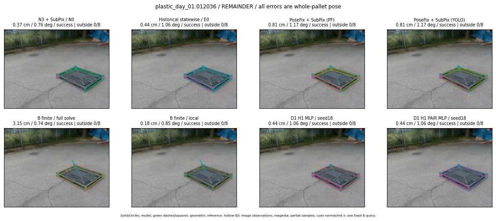

Whole-pallet pose errors; reference is a fixed geometric annotation, not certified physical GT.

Scores are uncalibrated logits. N0 retention is a numerical pose alias; it differs from H0 none or B fallback. B/I and profiles in baseline/B panels are original observations; L panels use new D1 observations. Only one deterministic supported B query is shown in a thumbnail; full support counts are below. Grey privacy rectangles edit the display copy only and are unrelated to O states; all observations were measured on original pixels. Thumbnails use JPEG quality85; detailed scientific panels are PNG.
| Method | Whole pose / cm, deg | Actual source | Selected ID | Score | Archived candidates | Eligible | N0 retained | H0 none | Fallback | Finite profiles |
|---|---|---|---|---|---|---|---|---|---|---|
| Raw YOLO + F | 4.67 cm / 0.64 deg / success | OTHER | None | N/A | N/A | N/A | False | N/A | None | N/A |
| N3 + SubPix / N0 | 0.37 cm / 0.76 deg / success | N0 | None | N/A | N/A | N/A | True | N/A | None | N/A |
| Historical statewise / E0 | 0.44 cm / 1.06 deg / success | E0_REGENERATED | None | N/A | N/A | N/A | False | N/A | False | N/A |
| PoseFix raw | 6.54 cm / 0.46 deg / failure | OTHER | None | N/A | N/A | N/A | False | N/A | None | N/A |
| PoseFix + SubPix (PF) | 0.81 cm / 1.17 deg / success | OTHER | None | N/A | N/A | N/A | False | N/A | False | historical support records 9; finite audit N/A |
| PoseFix + SubPix (YOLO) | 0.81 cm / 1.17 deg / success | OTHER | None | N/A | N/A | N/A | False | N/A | False | historical support records 9; finite audit N/A |
| Historical L, seed18 | 0.37 cm / 0.76 deg / success | N0 | N0 | N/A | 63 | 63 | True | True | True | N/A |
| Historical B fixed bank | 0.44 cm / 1.06 deg / success | E0_REGENERATED | G13/ORIGINAL_WD/sample/0 | N/A | N/A | N/A | False | N/A | False | N/A |
| Historical B full | 2.41 cm / 0.86 deg / success | OTHER | NEW/B/ORIGINAL_WD/h0/G13/ORIGINAL_WD/sample/0/PROPOSED_NATIVE_YAW_0 | N/A | N/A | N/A | False | N/A | False | N/A |
| Historical edge full | 36.48 cm / 9.52 deg / failure | OTHER | NEW/edge/ORIGINAL_WD/h0/G13/ORIGINAL_WD/sample/0/PROPOSED_NATIVE_YAW_0 | N/A | N/A | N/A | False | N/A | False | N/A |
| Historical AB full | 2.41 cm / 0.86 deg / success | OTHER | NEW/AB/ORIGINAL_WD/h0/G13/ORIGINAL_WD/sample/0/PROPOSED_NATIVE_YAW_0 | N/A | N/A | N/A | False | N/A | False | N/A |
| B finite / fixed bank | 0.44 cm / 1.06 deg / success | E0_REGENERATED | G13/ORIGINAL_WD/sample/0 | N/A | N/A | N/A | False | N/A | False | 30/30 |
| B finite / full solve | 3.15 cm / 0.74 deg / success | OTHER | NEW_FINITE/B/ORIGINAL_WD/h0/G13/ORIGINAL_WD/sample/0/PROPOSED_NATIVE_YAW_0 | N/A | N/A | N/A | False | N/A | False | 30/30 |
| B finite / local | 0.18 cm / 0.85 deg / success | OTHER | NEW_FINITE/B/ORIGINAL_WD/h0/N0_LOCAL_SAME_PHYSICAL_POSE/ORIGINAL_WD | N/A | N/A | N/A | False | N/A | False | 30/30 |
| Edge finite / full solve | 0.44 cm / 1.06 deg / success | E0_REGENERATED | G13/ORIGINAL_WD/sample/0 | N/A | N/A | N/A | False | N/A | False | 30/30 |
| D0 H0 MLP / seed18 | 0.37 cm / 0.76 deg / success | N0 | N0 | 3.627140760421753 | 27 | 27 | True | True | True | N/A |
| D0 H0 MLP / seed19 | 0.37 cm / 0.76 deg / success | N0 | N0 | 3.8781518936157227 | 27 | 27 | True | True | True | N/A |
| D0 H0 MLP / seed20 | 0.37 cm / 0.76 deg / success | N0 | N0 | 1.6134159564971924 | 27 | 27 | True | True | True | N/A |
| D0 H1 MLP / seed18 | 0.44 cm / 1.06 deg / success | E0_REGENERATED | E0_REGENERATED | -0.45774054527282715 | 27 | 27 | False | False | False | N/A |
| D0 H1 MLP / seed19 | 0.44 cm / 1.06 deg / success | E0_REGENERATED | E0_REGENERATED | -0.6110199093818665 | 27 | 27 | False | False | False | N/A |
| D0 H1 MLP / seed20 | 0.44 cm / 1.06 deg / success | E0_REGENERATED | E0_REGENERATED | -1.3830598592758179 | 27 | 27 | False | False | False | N/A |
| D1 H0 MLP / seed18 | 0.37 cm / 0.76 deg / success | N0 | N0 | 8.155726432800293 | 27 | 27 | True | True | True | N/A |
| D1 H0 MLP / seed19 | 0.37 cm / 0.76 deg / success | N0 | N0 | 7.843523025512695 | 27 | 27 | True | True | True | N/A |
| D1 H0 MLP / seed20 | 0.37 cm / 0.76 deg / success | N0 | N0 | 7.16270112991333 | 27 | 27 | True | True | True | N/A |
| D1 H1 MLP / seed18 | 0.44 cm / 1.06 deg / success | E0_REGENERATED | E0_REGENERATED | 0.8119393587112427 | 27 | 27 | False | False | False | N/A |
| D1 H1 MLP / seed19 | 0.44 cm / 1.06 deg / success | E0_REGENERATED | E0_REGENERATED | 0.5103122591972351 | 27 | 27 | False | False | False | N/A |
| D1 H1 MLP / seed20 | 0.44 cm / 1.06 deg / success | E0_REGENERATED | E0_REGENERATED | 0.38814544677734375 | 27 | 27 | False | False | False | N/A |
| D1 H1 ROLE AFFINE / seed18 | 0.44 cm / 1.06 deg / success | E0_REGENERATED | E0_REGENERATED | 0.7880997657775879 | 27 | 27 | False | False | False | N/A |
| D1 H1 ROLE AFFINE / seed19 | 0.44 cm / 1.06 deg / success | E0_REGENERATED | E0_REGENERATED | -0.15636225044727325 | 27 | 27 | False | False | False | N/A |
| D1 H1 ROLE AFFINE / seed20 | 0.44 cm / 1.06 deg / success | E0_REGENERATED | E0_REGENERATED | 0.6113775968551636 | 27 | 27 | False | False | False | N/A |
| D1 H1 PAIR MLP / seed18 | 0.44 cm / 1.06 deg / success | E0_REGENERATED | E0_REGENERATED | -0.8693556189537048 | 27 | 2 | False | False | False | N/A |
| D1 H1 PAIR MLP / seed19 | 0.44 cm / 1.06 deg / success | E0_REGENERATED | E0_REGENERATED | -0.4904823303222656 | 27 | 2 | False | False | False | N/A |
| D1 H1 PAIR MLP / seed20 | 0.44 cm / 1.06 deg / success | E0_REGENERATED | E0_REGENERATED | 0.06996341794729233 | 27 | 2 | False | False | False | N/A |
| D1 H1 PAIR ROLE AFFINE / seed18 | 0.44 cm / 1.06 deg / success | E0_REGENERATED | E0_REGENERATED | -0.16707663238048553 | 27 | 2 | False | False | False | N/A |
| D1 H1 PAIR ROLE AFFINE / seed19 | 0.44 cm / 1.06 deg / success | E0_REGENERATED | E0_REGENERATED | -0.2573348879814148 | 27 | 2 | False | False | False | N/A |
| D1 H1 PAIR ROLE AFFINE / seed20 | 0.44 cm / 1.06 deg / success | E0_REGENERATED | E0_REGENERATED | -0.15330812335014343 | 27 | 2 | False | False | False | N/A |
| Regenerated common E0 | 0.44 cm / 1.06 deg / success | E0_REGENERATED | E0_REGENERATED | N/A | N/A | N/A | False | N/A | False | N/A |